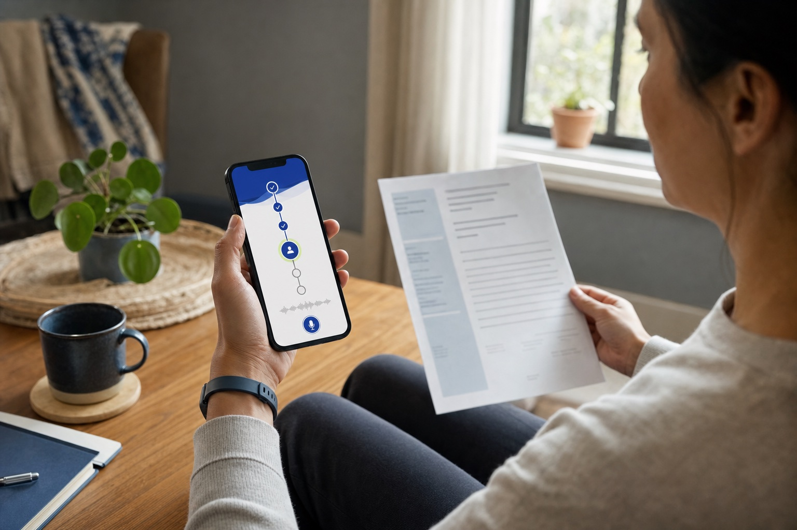

O acesso começa aqui. O cuidado continua humano.
Um corredor de acesso fechado: da solicitação de cuidado não-urgente até o próximo passo documentado — preparado por IA, decidido sempre por profissionais licenciados, acompanhado até o desfecho.
Como seria o atendimento
Três momentos do conceito, ilustrados. Digital quando possível, assistido quando a evidência exigir — sempre com decisão clínica humana.
O ponto assistido: sinais vitais aferidos na hora — pressão, frequência cardíaca
Cabine em espaços amplos — mercados, rodoviárias, farmácias, unidades de trabalho — para quem não tem telefone, computador, internet ou privacidade, quando o protocolo do parceiro exigir instrumento.
Visualização conceitual — não é um produto existenteA revisão assíncrona do especialista
Modelo eConsult: o especialista revisa o caso preparado, no seu tempo, mantendo os papéis clínicos exigidos em cada passo.
Visualização conceitual — não é um produto existente
O acompanhamento no app do paciente
Canal futuro para quem tem celular e conexão: acompanha a solicitação, recebe o próximo passo e mantém tudo documentado.
Visualização conceitual — não é um produto existenteO circuito em 8 passos
O que estamos testando — primeiro em modo sombra, com casos sintéticos ou retrospectivos desidentificados e autorizados, na linha de serviço que o operador escolher com dados reais (volume de encaminhamentos, fila, espera).
Solicitação
A pessoa inicia uma solicitação de cuidado não-urgente e permanece no fluxo e no prontuário existentes — nada de sistema paralelo.
Preparação com IA
A IA organiza o pacote do caso: fonte, tradução, lacunas apontadas e anexos — sem decidir nada clínico.
Consentimento
Consentimento registrado antes de qualquer passo, com os papéis clínicos exigidos — clínico assistente e especialista — preservados.
Revisão do especialista
O especialista revisa o caso de forma assíncrona (modelo eConsult), no seu tempo, com o pacote completo à frente.
Resolução ou encaminhamento
O profissional resolve, pede mais informação, recomenda vídeo ou avaliação presencial — a decisão é sempre humana.
Acompanhamento
Um dono operacional acompanha o caso até o próximo passo ser concluído — ninguém fica perdido no meio do caminho.
Desfecho documentado
Cada caso termina com o próximo passo registrado no prontuário existente — desfecho, não promessa.
Dashboard
O painel mede solicitação → desfecho, não apenas "consulta realizada".
O que a cabine afere
Capacidades propostas do conceito — entram apenas quando o protocolo do parceiro exigir instrumento.
proposta do conceito Frequência cardíaca
proposta do conceito Temperatura
proposta do conceito Saturação (SpO₂)
proposta do conceito
Nenhum instrumento está homologado, integrado ou prometido. O que a cabine afere será definido pelo protocolo clínico do parceiro e validado no piloto — e só entra no roadmap se os dados mostrarem necessidade.
Governança e gate de evidência
Acessibilidade é decisão de canal: digital quando possível, assistido quando a evidência exigir. A cabine só entra no roadmap se os dados do piloto mostrarem falha por conectividade, privacidade, letramento ou instrumento.
Um design partner real
Operadora integrada, autogestão ou rede com um corredor real de encaminhamentos (≥50/mês, espera mediana ≥30 dias).
90 dias, 50 casos
Modo sombra, com casos sintéticos ou retrospectivos desidentificados e autorizados — antes de qualquer dado identificável.
100% de revisão humana
Autoridade clínica humana explícita em todo passo com consequência. A IA prepara; profissionais licenciados decidem.
O que esta página não pode prometer
- Nenhum diagnóstico, prescrição, exclusão de urgência ou escolha autônoma de especialidade pela IA.
- Nenhum dado de saúde identificável antes de contratos, governança e revisão clínica.
- Nenhuma promessa de médicos disponíveis, preço, SLA, 24/7, redução de fila ou de custo.
- Validar o corredor antes da plataforma; o software antes do hardware dedicado.
Seja design partner
Procuramos uma operadora integrada, autogestão ou rede com um corredor real de encaminhamentos disposta a testar em modo sombra — 90 dias, 50 casos, 100% de revisão humana. Se você conhece esse fluxo por dentro, compartilhe seu caminho de acesso.